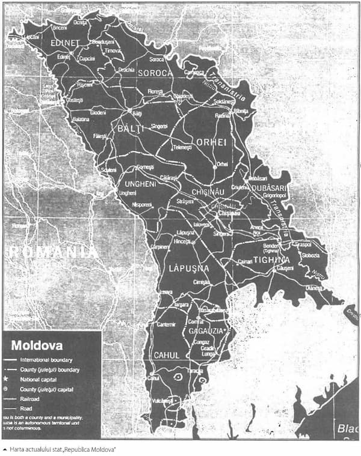

Cine e pe primul loc?
Tot teatrul din jurul „osului european” nu le este pe placul alegătorilor din Republica Moldova, cel puțin asta arată sondajul de opinie cu întrebarea foarte actuală: „Noi pe cine votăm?”. Acest parlament de conjunctură și acest președinte-interimar de tristă amintire nu o mai pot duce mult: nici legal și nici de facto, totuși ce vom alege în schimb din coșul de tarantule și șerpi veninoși? Să fie capitaliștii cu secere și ciocane sau capitaliștii cu stegulețe albastre și stele căzătoare, oricum buzunarelor acestor „homo politicus” le este comună o caracteristică și anume a faptului că sînt fără de fund.
Doar patru partide ar trece în Parlament
Doar patru partide ar accede în Parlament dacă duminica viitoare ar avea loc alegeri: PCRM, PLDM, PD și PL, în timp ce o altă formațiune care se regăsește în actualul legislativ, AMN, ar rămâne sub pragul electoral. Cel puțin așa arată datele ultimului sondaj de opinie, realizat de Institutul de Marketing și Sondaje IMAS-INC Chișinău, care a fost făcut public ieri. Acesta mai arată că Marian Lupu se menține în fruntea topului politicienilor care se bucură de cea mai mare încredere (42% dintre respondenți), fiind urmat de Vladimir Filat (39%), Vladimir Voronin (36%), Dorin Chirtoacă (28%), Mihai Ghimpu (23%).
Potrivit sondajului, Partidul Comuniștilor ar obține 28% din voturile alegătorilor, Partidul Liberal Democrat - 16,5%, Partidul Democrat - 8,6 %, iar Partidul Liberal - 4,9%. Alianța „Moldova Noastră” ar acumula doar 2,1% și nu ar accede în legislativ, la fel ca și PSD (2,5%), PPCD (1%), MAE (0,5%) sau Partidul „Moldova Unită” (0,4%). Totodată, mai mult de o treime din alegători sunt indeciși.
Autorii concluzionează că PCRM se menține la un plafon de 28% din intenția netă de vot, dar cu un trend descendent privind credibilitatea partidului (coborâtă acum la 35% față de 41% în noiembrie 2009) și a liderului Vladimir Voronin (36% față de 41%). În cazul PLDM asistăm la o premieră: cota de credibilitate a partidului ajunge la 35% (la fel ca și a PCRM-ului), în creștere cu 5% față de sondajul anterior. Premierul Vlad Filat continuă să adune votul de încredere a 39% dintre cetățeni, în timp ce PLDM, printr-o intenție de vot netă de 17%, este a doua forță politică, după PCRM. PDM, aflat pe un ușor trend descendent la capitolul intenție de vot (9%) și ceva mai pronunțat în privința liderului Marian Lupu (care scade de la 46% la 42% cotă de credibilitate), rămâne partidul ce furnizează candidatul la președinție cu cele mai mari șanse de a fi ales prin vot direct. PL pierde jumătate din electorat, abia atingând pragul de 5% intenție netă de vot. Totodată, AMN pare ieșit din calculele posibile ale actualei alianțe, se mai spune în concluziile sondajului.
Întrebați cum ar vota în cazul unui referendum constituțional, 79% din cei intervievați s-au pronunțat pentru alegerea președintelui țării prin vot direct, de către popor. La întrebarea deschisă pentru cine ar vota dacă duminica viitoare am avea alegeri prezidențiale 21% l-au numit pe M. Lupu, 17% au optat pentru V. Voronin, iar 14% pentru V. Filat. Sondajul mai arată că o eventuală aderare a R. Moldova la Uniunea Europeană este susținută de 62% din populație, în timp ce pentru intrarea în NATO se pronunță ferm doar 19%.
Potrivit sondajului, situația economică a țării determină o percepție exprimată la cel mai ridicat procent de nemulțumire din ultimii cinci ani (71% din respondenți se declară Nu prea mulțumiți sau Deloc mulțumiți de situația economică actuală a țării).
Comparativ cu situația din sondajul BSP din luna octombrie 2009, încrederea în majoritatea instituțiilor scade (în justiție - cu 14%, Parlament - 6%, Guvern - 5%, Primărie - 7%, partide politice - 10%, armată - 8%, biserică - 8%).
Sondajul a fost realizat în perioada 15 aprilie - 3 mai 2010, pe un eșantion național reprezentativ de 1054 de respondenți cu vârsta de 18 ani și peste, din 12 unități teritorial-administrative. Marja de eroare este de ±3%.
(www.timpul.md)
Zilele numărate ale Parlamentului și ale președintelui interimar
Mihai Ghimpu, președintele interimar al Republicii Moldova scrîșnește din dinți la gîndul ca își va pierde situația de conjunctură și va fi nevoit să arunce osul tocmai atunci cînd îi este cel mai drag, însă cu un Parlament care are o majoritate discutabilă și cu un președinte în afară de faptul că e interimar mai fiind și incompetent, nu cred că mai poate continua situația chiar și haita politicienilor cerînd o anumită ordine.
Ghimpu: Comuniștii nu sunt în drept să ceară dizolvarea Parlamentului
„Comuniștii nu sunt în drept să ceară dizolvarea Parlamentului, atâta timp cât nu sunt acumulate toate circumstanțele pentru a cere acest lucru. Ei pe de o parte cer, pe de alta nu vin la ședințe, iar mie Constituția nu-mi permite să fac așa ceva”, a declarat președintele interimar al țării, Mihai Ghimpu.
Replica lui Mihai Ghimpu vine ca reacție la declarațiile făcute de liderul comunist, Vladimir Voronin, potrivit căruia Parlamentul trebuie dizolvat, numită data alegerilor anticipate, după care PCRM va fi dispus să meargă la negocieri cu Alianța pentru Integrare Europeană în ceea ce privește modificarea articolului 78.
Potrivit lui Ghimpu, discuțiile pe marginea modificării articolului 78 trebuie să fie duse de Comisia parlamentară creată cu acest scop și nu să fie subiect de speculație. „Există o comisie parlamentară, comuniștii au delegat 4 deputați. Aceștia acum trebuie să discute, să vină cu o propunere în Parlament. Care va fi, pe aceea o vom examina”, a adăugat Ghimpu.
Vladimir Voronin a înaintat ieri, în cadrul unei conferințe de presă, din partea Partidului Comuniștilor, câteva condiții Alianței pentru Integrare Europeană, cele mai importante fiind dizolvarea Parlamentului și numirea datei alegerilor anticipate.
(www.jurnal.md)
Cine și cum scindează?
Cîtorva „cetățeni exemplari” nu le convine faptul că se poate introduce religia ca obiect de studio în școlile din Republica Moldova, ar fi o acțiune anticonstituțională și antisocial. Desigur că e mult mai bine să fie predate în școli toate aberațiile științifice de la darwinism și pînă la existența extratereștrilor, dar îndată ce vine vorba despre religie se aduce o gravă insultă „personulităților” care populează această țară avînd drept dumnezei pe J.J.Rousseau, C.Darwin și alte creaturi grizonate și atot-tolerante. Am dat însă dovadă de mult prea multă răbdare acceptînd toate aceste torturi la adresa sufletului românesc, care doar prin credință mai dăinuie, iar acum să ne plecăm capul în fața unor ONG-uri și a unor oameni goi pe dinăuntru și străini de neamul nostru?

„Referendumul ar putea scinda societatea”
Lideri ai 17 organizații neguvernamentale consideră că intenția de a introduce în mod obligatoriu obiectul „Bazele Ortodoxiei” în programul de studiu școlar este contrară principiului constituțional de separare a religiei de stat în R. Moldova. Ei optează pentru respectarea principilor fundamentale, care prevăd separarea bisericii de stat și neimplicarea statului în activitatea comunităților religioase.
„Unele partidele politice speculează tema introducerii religiei în școli pentru a câștiga dividende politice”, a declarat marți, într-o conferință de presă, Sergiu Ostaf, director al Centrului de Resurse pentru Drepturile Omului CreDO. Alături de el, un grup de 17 ONG-uri din RM, dar și cetățeni de rând, care au constituit Grupul de inițiativă pentru promovarea statului secular, și-au exprimat indignarea față de intenția Mitropoliei Moldovei de a organiza un referendum privind introducerea cursului „Bazele Ortodoxiei” ca obiect de studiu obligatoriu în școală. „Constituția prevede două lucruri: separarea religiei de stat și libertate de a alege apartenența religioasă. Inițiativa de a organiza un referendum nu convine acestor două principii. Astfel, din start, inițiativa e neconstituțională”, a declarat Sergiu Ostaf. „Credem că inițiativa de organizare a referendumului ar putea scinda societatea, chiar dacă nu se va ajunge la introducerea acestui curs ca obiect de studiu în învățământ. De asemenea, considerăm că acest pas ar afecta grav libertățile individuale ale cetățenilor”, a declarat Arcadie Barbăroșie, unul dintre membrii grupului. El a sugerat că este mai binevenită crearea școlilor duminicale pe lângă biserici, care ar putea fi frecventate de copii în zilele de odihnă. De asemenea, membrii grupului consideră că atragerea comunității spre Biserica Ortodoxă ar trebui făcută prin mai multe activități caritabile, mai multă grijă pentru enoriași, pentru cei săraci și copii orfani, nu prin obligativitatea unor studii.
„Îmi doresc o școală duminicală unde copiii mei să poată comunica cu Dumnezeu pe înțelesul lor. Introducerea cursului de religie va diviza copiii după apartenența la una sau altă confesiune religioasă. Părinții trebuie să decidă religia copilului lor, iar impozitele achitate de ei trebuie să meargă la soluționarea problemelor stringente, nu la surparea relațiilor”, a spus Antonița Fonari, una dintre semnatarele Declarației. Şi o altă semnatară, Galina Precup, consideră că, odată cu introducerea obiectului ce va favoriza ortodoxia, va începe o divizare a colectivelor și o luptă între copii, deoarece în fiecare sat sunt reprezentanți a cel puțin trei confesiuni”. Entuziaștii acestei inițiative ar putea culege rezultate neașteptate, inverse celor scontate. Vreau ca biserica să ne unească, dar nu să ne disperseze”, a mai spus Galina Precup.
Arcadie Barbăroșie susține că „există o confuzie majoră și în ceea ce se discută”. Potrivit lui, inițial, Mitropolia Moldovei a solicitat ca obiectul „Bazele Ortodoxiei” să fie obligatoriu. Apoi a vorbit despre un curs opțional. „Însă în R. Moldova opțional nu înseamnă că vine la ore cine vrea, ci doar că acest obiect intră în lista celor opționale, aprobate printr-un ordin de către ministrul Educației. Şi, până la urmă, copiii vor fi obligați să meargă la acest curs. Nici ministerul nu are o idee clară despre ce se vrea. Ba se spune că acest obiect se va numi „Bazele Ortodoxiei”, ba „Istoria religiei”, ba „Religia” - și sunt lucruri diferite…”, susține expertul, care e convins că statul nu poate admite protejarea unei religii în mod special, ingerințele în treburile interne ale cultelor sau finanțarea activităților religioase din banii publici.
La rândul său, Pavel Borșevschi, parohul Bisericii „Sfântul Dumitru” din capitală, susține că, indiferent care din aceste trei denumiri va fi aleasă, se vor studia aceleași lucruri. „Nu este altceva decât știința prin care copiii să-l cunoască pe Dumnezeu”. Clericul consideră că pentru introducerea obiectului religia în școli nu este nevoie de a fi organizat un referendum, căci acesta a fost eliminat fără vreun referendum. Iar referindu-se la faptul că unele partide ar putea specula acest subiect, Pavel Borșevschi ne-a spus că „problema introducerii religiei în școală nu poate fi ideea unui partid politic, a unui om sau a unui sistem. Poporul acesta este ortodox. Iar cei care îndrăznesc să vorbească contra religiei sunt, de fapt, contra acestui popor băștinaș. Noi nu vrem pe nimeni să obligăm să studieze „religia”, căci va fi obiect opțional”.
Secularismul promovat de Grupul de Inițiativă nu înseamnă ateism, ci presupune obligativitatea de separare a bisericii de stat. Declarația Grupului de Inițiativă pentru Promovarea Statului Secular, semnată de mai mulți reprezentanți ai societății civile, a fost remisă Parlamentului RM, Guvernului, Mitropoliei Moldovei, Mitropoliei Basarabiei, partidelor politice, organizațiilor internaționale acreditate la Chișinău.
(www.timpul.md)
De 9 mai – ziua Europei cîteva scursuri europene și-au dat întîlnire la o baie de mulțime. În atmosfera de jovialitate s-au integrat și cîteva specimene băștinașe în frunte cu primarul Chișinăului, Dorin Chirtoacă. Sentința care a fost dată e tristă : Europa e în Chișinău la ea acasă… Noi unde sîntem acasă?
„La Chișinău, Europa este la ea acasă”
De Ziua Europei, primarul capitalei, Dorin Chirtoacă, i-a felicitat pe chișinăuieni în trei limbi (română, rusă și engleză) cu prilejul celor două evenimente marcate la 9 mai: împlinirea a 65 de ani de la victoria asupra fascismului și Ziua Europei.
În cadrul conferinței de presă, organizată în Scuarul Europei, Dorin Chirtoacă a subliniat: „Mă bucur că R. Moldova poate fi o gazdă demnă pentru ambele sărbători, în condiții de armonie și bună înțelegere. Pacea adusă în 1945 a permis ulterior să fie făurită Europa unită, Europa modernă, iar astăzi putem vorbi și de viitorul Moldovei în cadrul Europei unite”, a spus primarul capitalei.
În cadrul aceleiași conferințe de presă, șeful Delegației UE în Moldova, Ambasadorul Dirk Schuebel, a remarcat faptul că „în ultimul timp au fost întreprinși pași semnificativi în vederea apropierii R. Moldova de integrarea europeană”. „Noi am început deja negocierile privind Acordul de asociere, iar în curând vom începe negocierile pe marginea Acordului de vize. Sperăm că, în foarte scurt timp, veți putea călători liber în UE”, a menționat ambasadorul.
În Scuarul Europei a mai fost prezent și consilierul municipal, președintele mișcării politice „Ravnopravie”, Valeriu Klimenko, care a ținut să-i felicite și el cu ocazia Zilei Europei pe toți cei care o marchează. Acesta a subliniat că „ doar luând în calcul și interesele minorităților vom putea spune că în Moldova sunt elemente de democrație și că aceasta poate pretinde să fie membru al UE”.
La Chișinău au fost preconizate mai multe acțiuni legate de Ziua Europei. Seria de manifestații va culmina cu un eveniment de amploare ce se va produce la 15 mai în Piața Marii Adunări Naționale: ambasadele statelor membre ale UE și cei care implementează proiectele finanțate de UE vor edifica un adevărat Orășel European. Cu această ocazie, Comisarul European pentru Extindere și Politica Europeană de Vecinătate, Stefan Fule, va întreprinde o vizită la Chișinău.
(www.timpul.md)
Pașaport de Europa
Vă iubim, vă dorim, însă nu vă primim în Europa fără pașaport biometric! Sună destul de ciudat declarația dar asta e concluzia faptului că din ianuarie 2011 vom avea pașapoarte biometrice obligatorii. Interesant e că dragostea UE care încearcă să pară una atît de altruistă și necondiționate își înfige din ce în ce mai des colții veninoși în sărmana noastră identitate și conștiință silindu-ne la compromisuri rușinoase gen parade gay-ilor, împrumuturi fără perdea și mai nou pașapoarte biometrice.
Pașaport biometric, obligatoriu din ianuarie 2011
De la 1 ianuarie 2011 nu vor mai fi eliberate pașapoarte care nu conțin date biometrice, a anunțat ieri, în cadrul unei conferințe de presă, ministrul Tehnologiilor Informaționale și Comunicațiilor, Alexandru Oleinic. Astfel că toți cei care vor dori să viziteze liber țările din spațiul Schengen vor fi obligați să dețină pașaport biometric.
Deținătorii de pașapoarte nonbiometrice nu vor fi obligați să și le reperfecteze în biometrice decât după expirarea termenului de valabilitate. Până atunci, însă, aceștia vor putea circula liber doar în țările CSI sau în țările europene care permit accesul în bază de vize.
Pașaportul cu date biometrice este considerat cel mai protejat document și este acceptat și recunoscut de UE și țările de vest în procesul de migrație. Utilizarea lui este condiția obligatorie a UE față de R. Moldova pentru simplificarea regimului de vize.
Pașaportul cu date biometrice arată la fel ca și cel eliberat până acum, doar că acesta conține un cip care, pe lângă informația tradițională despre titular, mai păstrează și fotografia digitală a acestuia, precum și amprentele digitale, certificatul electronic, grupa sangvină și alte date recunoscute de standardele internaționale.
Specialiștii spun că aceste pașapoarte reduc riscurile ce țin de falsificarea actelor, migrarea ilegală și infracțiunile legate de „furtul de identitate”. Directorul Departamentului de producere la ÎS „Registru”, Victor Reicenco, susține că „datele sunt codificate în așa mod încât doar în baza codului numeric să fie permis accesul la informațiile de pe cipul inserat în coperta pașaportului”.
La moment, pașapoartele cu date biometrice sunt eliberate doar la Chișinău. Procedura obișnuită de verificare a documentelor este urmată doar de fotografierea și înregistrarea amprentelor degetelor arătătoare de la ambele mâini.
Ministrul Alexandru Oleinic a declarat pentru TIMPUL: „Toți cei care se pronunță împotriva codului numeric introdus în buletin și a cipului din pașaportul biometric, dacă vor dori să viziteze statele europene, vor trebui să se conformeze regulilor internaționale, pentru că fiecare țară are regulile sale de intrare a cetățenilor străini”.
În ceea ce privește costul unui pașaport biometric ministrul a anunțat prețul de 75 de euro pentru eliberarea în 30 de zile, în timp ce în țările europene costul variază de la 88 de euro în Franța, până la zero euro în Spania și Ungaria. Totodată, Alexandru Oleinic a ținut să menționeze că se va încerca apropierea costului unui pașaport biometric de costul celui nonbiometric, iar în cel mai scurt timp vor fi micșorate cu 10-15% costurile pentru pașapoartele obișnuite.
Până în prezent în R. Moldova au fost eliberate 1529 de pașapoarte biometrice cu valabilitatea de șapte ani. La Chișinău există utilajul necesar pentru eliberarea unui pașaport biometric în patru ore contra 2800 lei, iar într-o zi - contra 2100 lei.
AXA NOASTRĂ: ÎNTRE DUMNEZEU ȘI NEAMUL ROMÂNESC
Comentarii